Jade Hardware Wallet
Setup a bitcoin hardware wallet with Blockstream's Jade.
Jade wallet is designed and manufactured by Blockstream, a company founded by Adam Back.
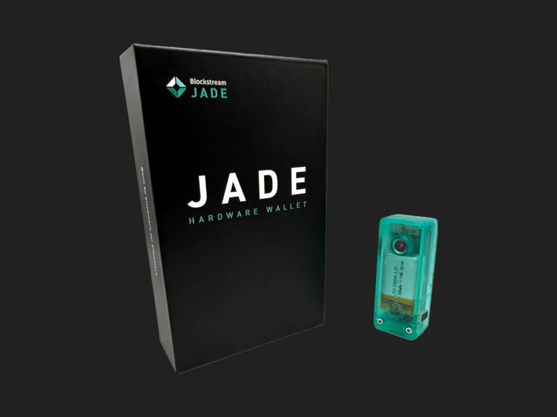The Jade is 100% open source:
Hardware
For this tutorial, we use the original Jade wallet, which can be purchased from Blockstream's shop:
The Jade comes with a battery. To charge it, you can use the provided USB to USB-C cable.
Alternatively, for more security, you can purchase a non-data transfer cable or use a wall charger to avoid connecting to a PC.
Make sure your Jade has enough battery before starting this tutorial.
Controls
Power Button
Press and hold to turn on / turn off your Jade.
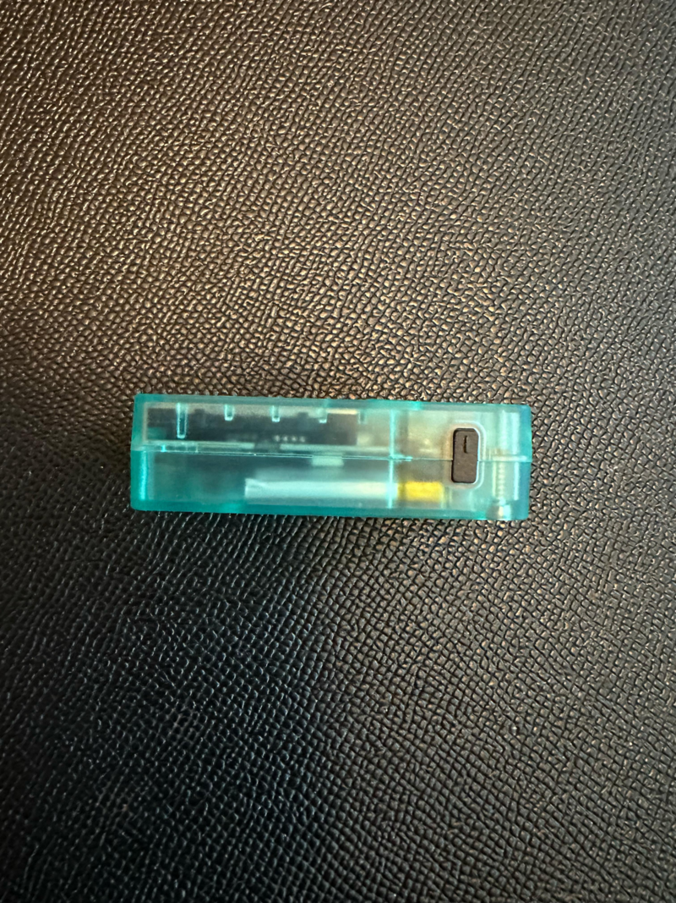Wheel
Turn left or right to switch between options
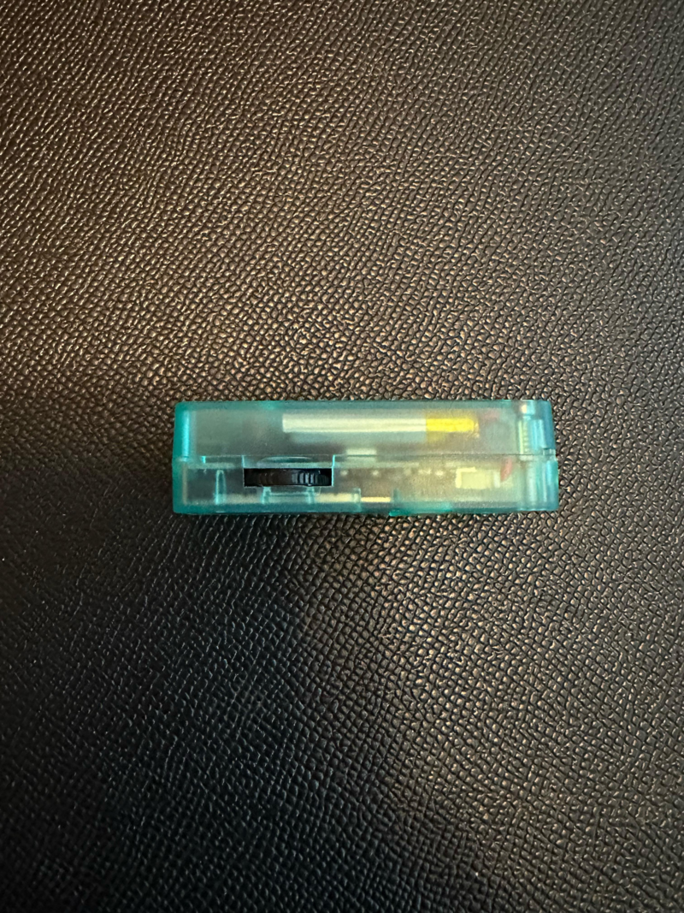Select button
Press to select an option
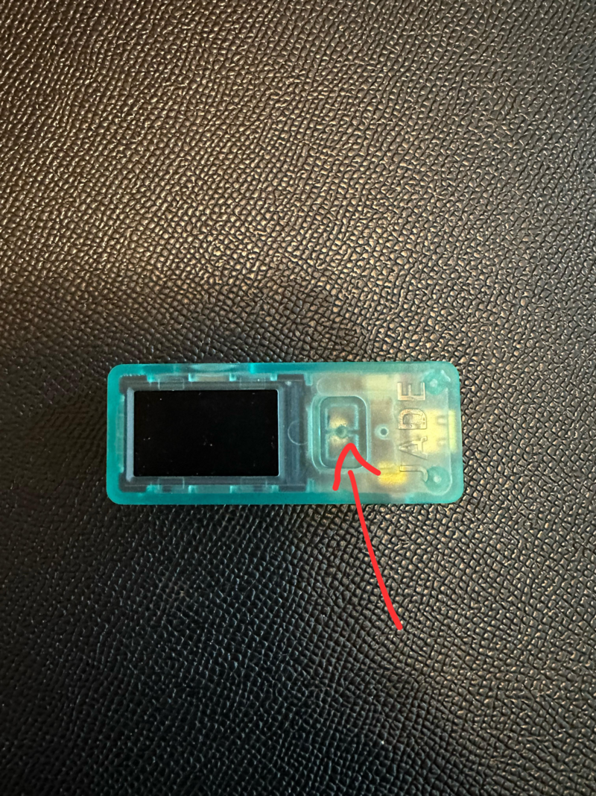Green Wallet
The Jade supports multiple modes:
- Bluetooth: Wireless connection to the Green Wallet app on your phone.
- USB: Direct connection to your computer using a cable.
- QR: Air-gapped communication by scanning QR codes.
- Micro SD: Air-gapped communication by using microSD cards.
For this tutorial we will focus on the Bluetooth mode because it is the easiest to setup. Future tutorials will cover the other modes.
Before you get started with the tutorial, install Green wallet on your phone:
This wallet is fully open source:
Create a new wallet
Press and hold the power button to start the Jade.
Select Setup Jade > Continue > Begin Setup:
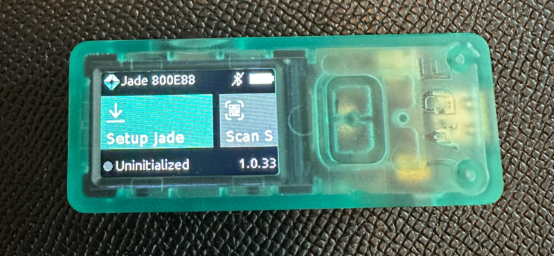At the bottom left notice the Uninitialized state with the grey circle


Next select Create Wallet > Continue:


Write down your seed words on a piece of paper or another non-digital medium.
The seed consists of 12 words, with 4 displayed per screen. Use the arrows at the top to navigate between pages and verify that you've correctly written down your seed. Your seed phrase is your only way to recover your funds if you lose your Jade.

Next, go through the seed verification process by confirming a few words:
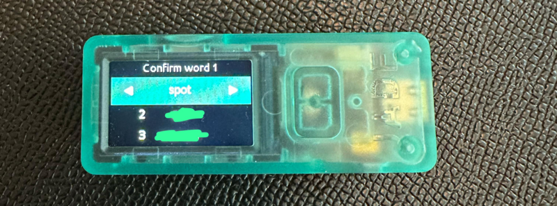Next we must select the connection mode we will use with the Jade. Choose Bluetooth:
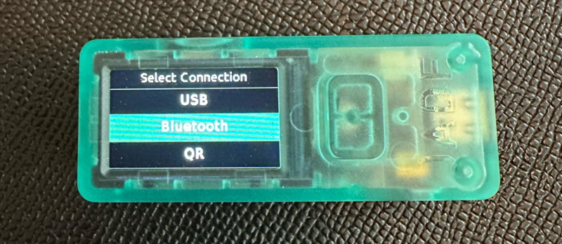Notice your device name, here Jade 800E88:

Now open Green wallet on your phone, accept the terms & conditions and choose On Hardware Wallet:
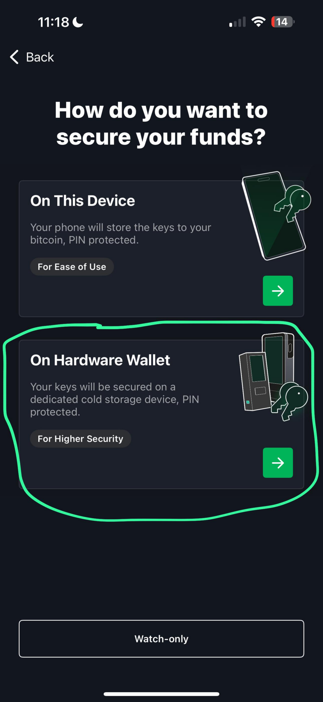Next click on Connect Jade:

Select your Jade wallet:
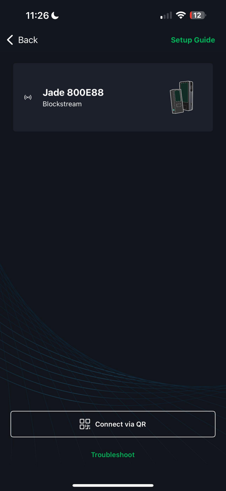If prompted, allow bluetooth pairing and take note of the code:
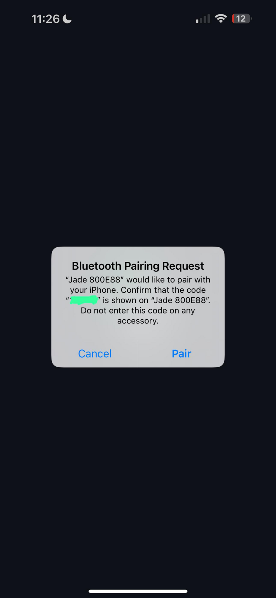On your Jade, make sure that the code is the same and confirm authentication:
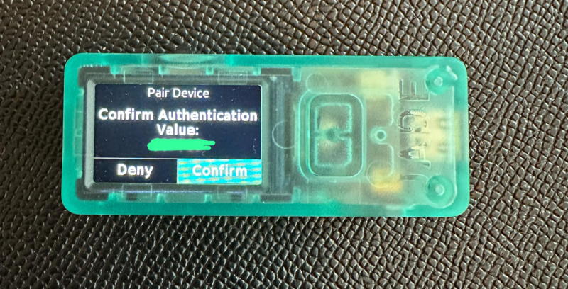Your Jade and Green wallet should now be paired. Hit Continue:
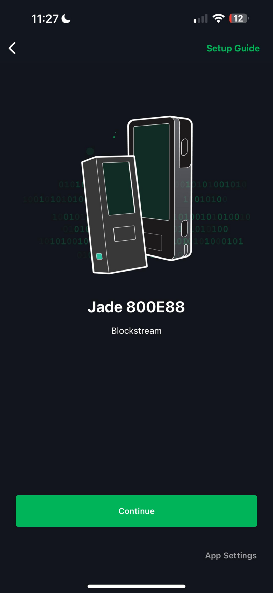You should now see a screen prompting you to create a PIN. Hit Continue:

On your Jade you should now be prompted to choose a PIN:

Take note of this PIN and store it safely, you won't be able to unlock your Jade without it.
Back on Green wallet, you should see a success screen. Now Hit Create Account:

If this screen doesn't show up, just hit Back and Continue again and it should show up.
Choose Standard:
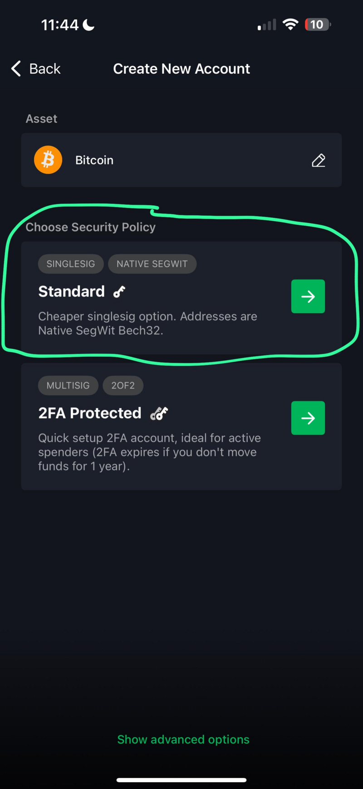Your Bitcoin wallet is now ready to send and receive BTC!

Unlock your Jade
Anytime you want to use your wallet to send or receive bitcoins you will have to unlock it.
Press and hold the power button to turn on the Jade. Then select Unlock Jade:
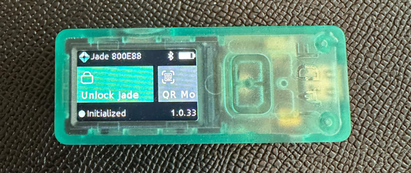The status at the bottom left now says Initialized with still a grey circle
Now on your phone, open Green Wallet and proceed with Bluetooth pairing using the same method as for the wallet creation in the previous step. Once the pairing is complete, you will be prompted to enter your PIN on your Jade.
Once you've entered your PIN, your Jade is unlocked and you can use the mobile app to send and receive BTC.

The bottom left status is now Active with green circle
Lock your Jade
When you're done you should always lock your Jade.
Simply select Session > Logout:


Now you can power off the Jade by pressing and holding the power button.
Receive Bitcoin
To receive Bitcoin, simply hit Receive at the bottom right of Green wallet:

Share the QR code or Bitcoin address to the sender. Once the funds are sent, the incoming transaction should show up pretty quickly in Green wallet.
Send Bitcoin
To send Bitcoin, hit Send at the bottom left of Green wallet:

Next, enter the recipient's bitcoin address or scan the QR code and hit Next:
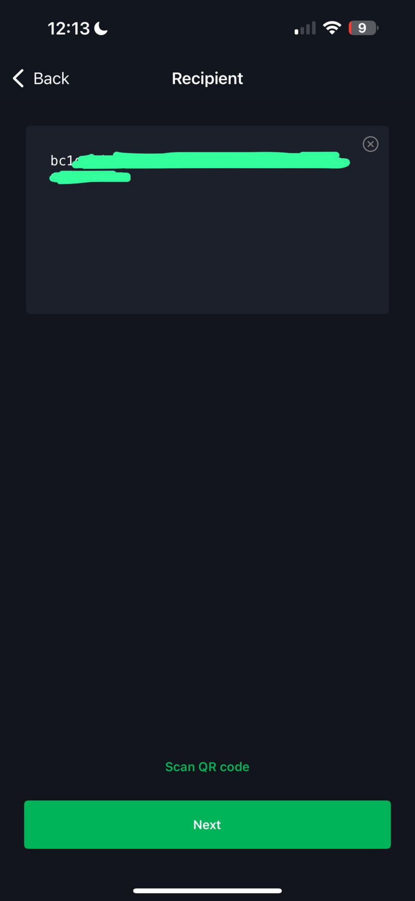Select the amount of bitcoin you wish to send and hit Next:
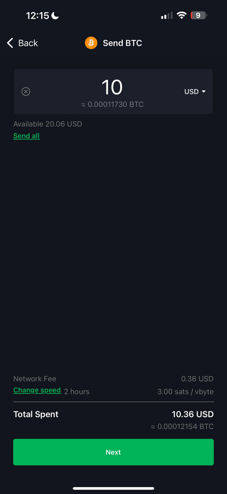Slide to send the transaction:
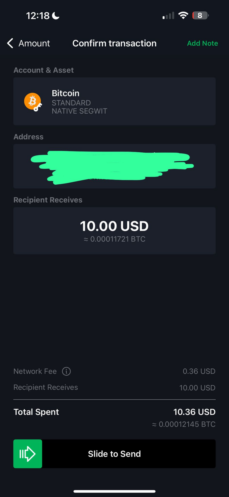You are now informed that you must confirm the transaction on your Jade:

Review the transaction:
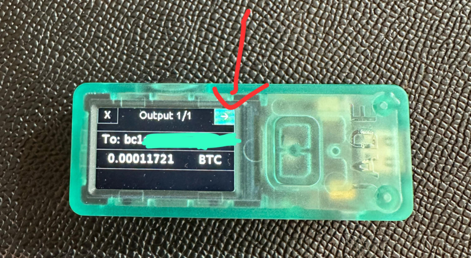And finally, confirm it:

On Green wallet you should see a confirmation that the transaction has been sent:
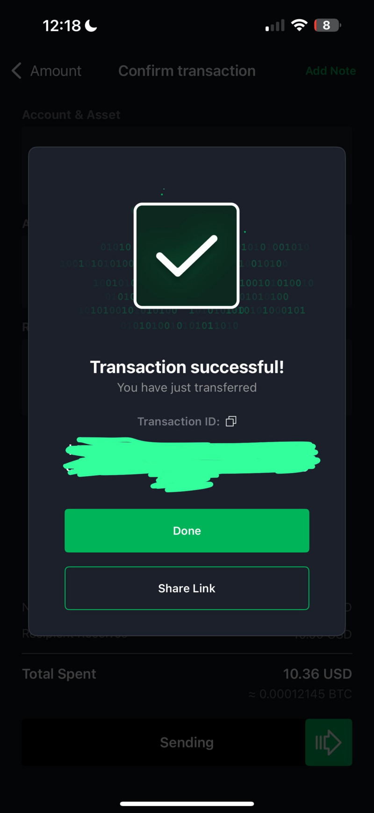Restore
If you had to factory reset your Jade or lost it and had to buy a new one, you can easily restore your wallet as long as you have your seed phrase.
Select Setup Jade > Continue > Begin Setup > Restore Wallet > 12 Words and enter each of your seed words in the correct order.
Then you'll be prompted to pair the Jade with green wallet and setup a new PIN the same way than during the wallet creation step.